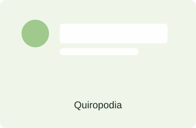
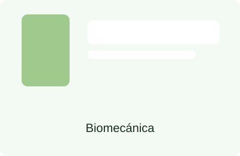
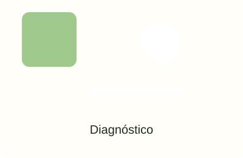
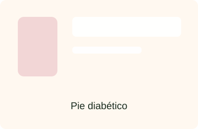
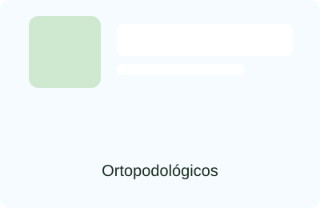
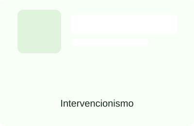

QUIROPODIA
(Durezas, hongos, uñas encarnadas, papilomas)
Cuidados básicos y tratamiento de las lesiones cutáneas y ungueales del pie: eliminación de durezas, tratamiento de hongos, manejo de uñas encarnadas y tratamiento de papilomas.
Podología profesional
Clínica Pies es un centro médico especializado en el diagnóstico y tratamiento de problemas y trastornos del pie.
Desde agosto de 2010, Clínica Pies ofrece y garantiza un tratamiento personalizado a cada uno de sus pacientes. Ya sea en la recepción o la sala de consulta, usted se sentirá en buenas manos.
Desde el diagnóstico hasta el tratamiento: aqui conocerá todos los servicios podologicos que podemos ofrecerle.
¿Qué puede hacer por usted un podólogo?
El podólogo se especializa exclusivamente en prevenir, diagnosticar y tratar por medios conservadores y/o quirúrgicos todas las enfermedades que afectan al pie. Es capaz de atender la totalidad del miembro inferior, desde las durezas y las uñas hasta las afecciones dermatológicas y los problemas biomecánicos.
En Clínica Pies trabajamos con un enfoque integral para ofrecer soluciones eficaces, personalizadas y orientadas a la prevención para mejorar su movilidad y calidad de vida.
Servicios

(Durezas, hongos, uñas encarnadas, papilomas)
Cuidados básicos y tratamiento de las lesiones cutáneas y ungueales del pie: eliminación de durezas, tratamiento de hongos, manejo de uñas encarnadas y tratamiento de papilomas.

(Estudios de la pisada)
Estudios de la marcha y la pisada para identificar alteraciones biomecánicas y diseñar soluciones personalizadas que mejoren la función y reduzcan el dolor.

(Ecografías, termógrafos…)
Recursos diagnósticos avanzados como ecografía y termografía para evaluar lesiones, inflamación y patrones de sobrecarga con precisión.

(Prevención y seguimiento)
Programa de prevención y tratamiento específico para pacientes con diabetes, controlando riesgo de úlceras, infecciones y complicaciones.

(Personalizados)
Ortésis y plantillas personalizadas para corregir alteraciones, redistribuir cargas y mejorar la funcionalidad del pie.

(Uñas encarnadas, infiltraciones…)
Procedimientos mínimamente invasivos como tratamiento de uñas encarnadas y técnicas de infiltración para control del dolor local cuando procede.
Por qué elegirnos
Valoramos cada problema del pie para diseñar un plan de tratamiento eficaz y seguro.
Abordamos la causa y la sintomatología para prevenir recaídas y mejorar la movilidad.
Te acompañamos con medidas preventivas para mantener tus pies sanos en el tiempo.
Documentos
Contacto
Si notas dolor, durezas, molestias de uñas, hongos o cualquier enfermedad del pie, te ayudamos a recuperar la salud del mismo con una atención individualizada.